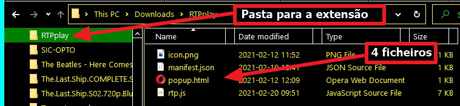
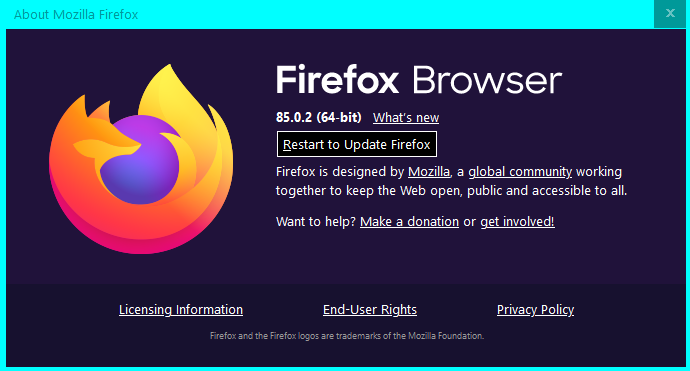
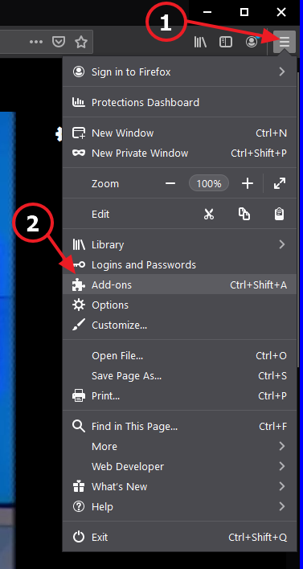
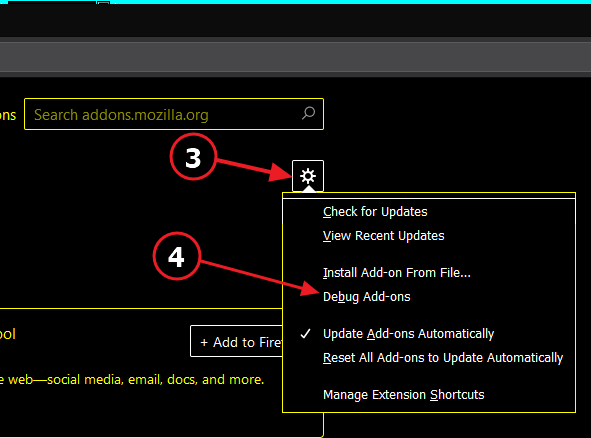
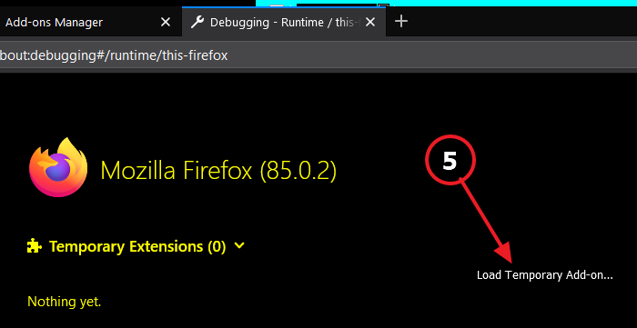
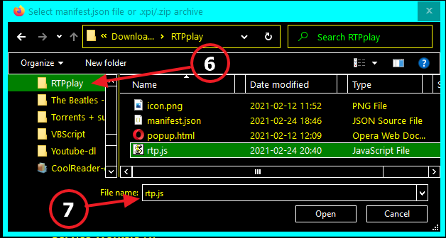
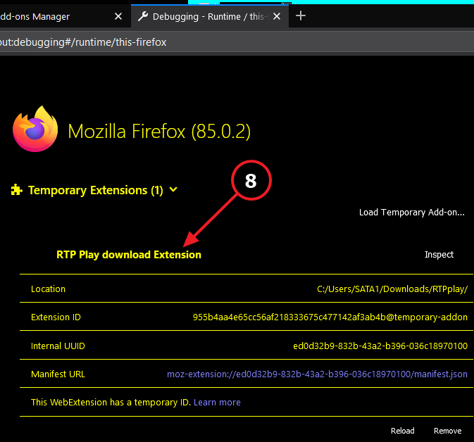
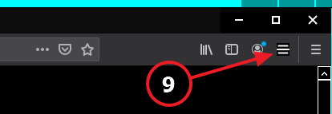
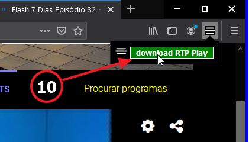
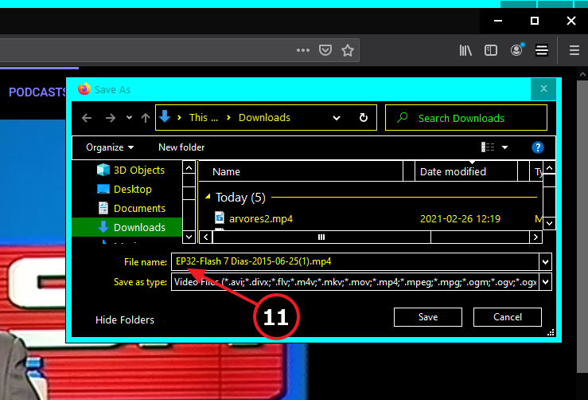

O que funciona hoje pode deixar de funcionar amanhã!
Normalmente adiciona-se uma extensão ao browser (Chrome, Firefox, Opera etc.) indo ao Play Store da Google e clicando em "Instalar".
Este serviço é pago, ter a extensão no Play Store, custa € 5.
O processo grátis, que vai ser usado aqui, é "instalar unpacked".
(a partir do disco rígido do PC).
Passos a seguir: copiar os 4 ficheiros
Um pedido de desculpas: o meu Windows está em english, e high-contrast.
Ter isto em conta quanto à terminologia e às cores das imagens.
- Baixar estes 4 ficheiros, clicando em cada um:
(v1.07 v1.10 v1.11 v1.12 v1.15 v1.17)v1.18
(na versão 1.18 créditos para ZWAME\@MaFiBoSS que deu a receita)
Excepto icon.png são 3 ficheiros de texto visualisáveis com p.ex. Notepad.
- Criar uma nova pasta, por exemplo RTPplay
-
Mover os 4 ficheiros para dentro da nova pasta:
RTPplay
icon.png
manifest.json
popup.html
rtp.js
exemplo:

{kind=link}
Passos a seguir: instalar a extensão
O FireFox tem algumas particularidades, continuar nesta página.
Foi testado na última versão do browser (86.0):

- No canto sup. direito clicar (1) nos três tracinhos.
-
No drop down menu clicar (2) en "Add-ons"
 - No novo menu, clicar (3) na roda dentada
e de seguida em "Debug Add-ons" (4)
 - Na página que se abre, clicar (5) em "Load Temporary Add-on",
 - Escolher (6) a pasta com os 4 ficheiros "RTPplay",
Seleccionar um deles (7) (o diálogo diz para escolher "manifest.json"
mas parece que qualquer ficheiro serve)

- A extensão fica instalada (8):

- No caso do Firefox o icon vai logo para junto da barra de extensões (9):

- A partir de agora, clicar (9) no icon e de seguida no botão "Download RTP" (10) que aparece, para correr a extensão

No diálogo "Save as..." que se abre, aceitar (ou alterar) (11) o nome sugerido:

|
A extensão trabalha em conjunto com youtube-dl. O que ela faz é procurar na página RTP Play um link para o "master.mdp" utilizável por youtube-dl. A seguir, como usar em Windows 10 Supondo que youtube-dl está na pasta \Downloads.
|
A extensão só funciona em links https://www.rtp.pt/play/etc.
A partir da página "https://www.rtp.pt/play/programas",
testei (os não asinalados parecem OK):
RTP Desporto RTP1 RTP2 TP3 RTPi América RTPi Ásia Academia RTP RTP Internacional Originais RTP Play RTP Lab RTP Criativa ........... Não tem nada? RTP Memória RTP Madeira RTP Açores RTP África Zig Zag Estudo Em Casa Antena1 Antena2 Antena3 Rádio Zig Zag RDP Internacional RDP África Antena1 Açores Antena1 Madeira Antena3 MadeiraNa maior parte a extensão funciona, nalguns casos a implementação do streaming mudou e a captura do URL do vídeo falha.
Mas como a RTP Play está sempre em obras, à medida que a ferramenta deixar de funcionar, p.f. avisem e juntem o link da página em falta.
Obrigado pela vossa atenção!
Rec